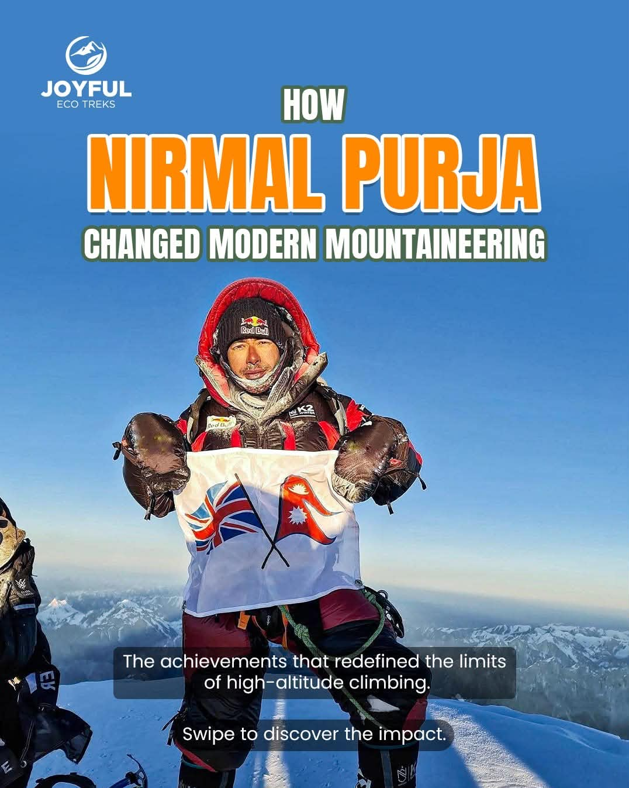
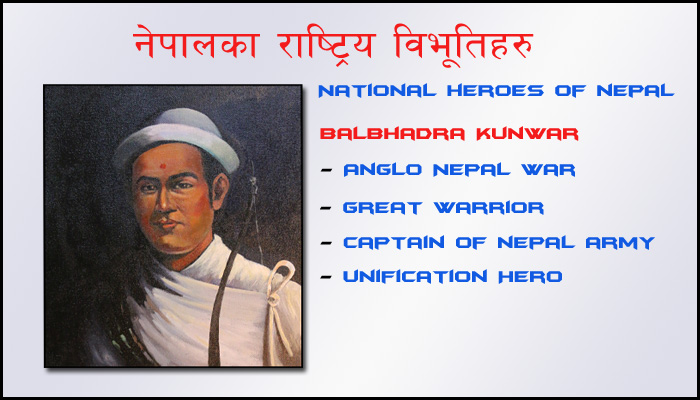
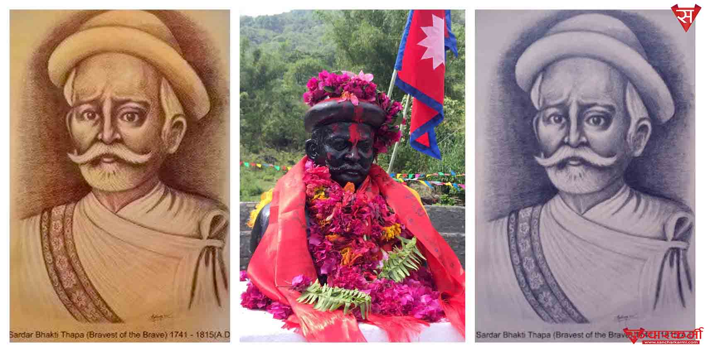
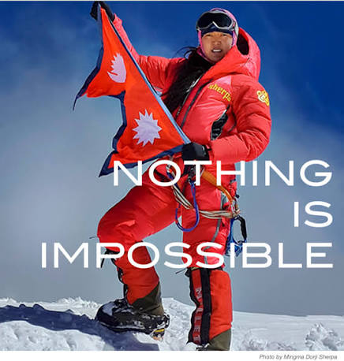

Our pride

The first Nepali to climb all 14 peaks over 8,000 meters. The achievement is a testament to his extraordinary mountaineering skills and unwavering determination. When he completed this feat, it made him the first person from Nepal to achieve this remarkable milestone.One perfect example of a brave individual who has brought honor to his country.Proud moment for the nation.

Famous for his heroic defense of the Nalapani fort with a small army against the British East India Company. he is remembered for his unwavering courage and dedication to the cause of Nepal's independence and his legacy continues to inspire generations.

At the age of 73, he fearlessly fought at the Battle of Deuthal and sacrificed his life for the sovereignty of Nepal.He is remembered for his unwavering courage and dedication to the cause of Nepal's independence. He is a true hero of the nation.

The first Nepali woman to summit Mount Everest in 1993, symbolizing courage and determination for women worldwide. If she could speak, she would tell stories of her incredible journey and inspire countless others to pursue their dreams. She is a true inspiration to all women.